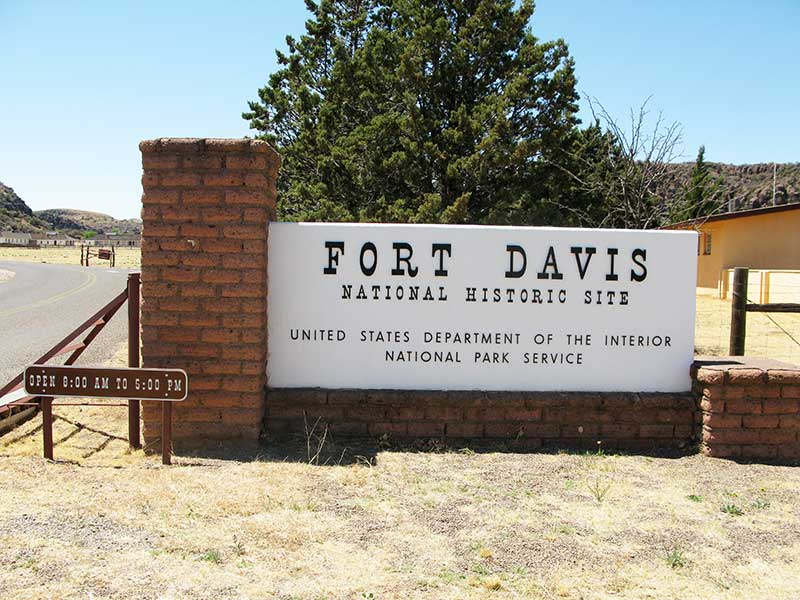

FORT DAVIS, TEXAS
Remote, tiny town with the biggest stars in Texas
Fort Davis, close to the Davis Mountains to the north, started life as a garrison town, serving the fort established there in 1854 to protect the frontier. Rich in tourism attractions and services, it offers the renovated fort and museum as a history lesson, nearby McDonald Observatory for star gazing, and the charming Davis Mountains State Park for camping, hiking and park events.
Only in Fort Davis
Alpine is the biggest of the three Tri-county cities and is home to Sul Ross University perched on a hill at the edge of town. Amoung it's mountainous views, Alpine is beautifully decorated with vibrant murals around many corners.

Best Grub
Apine stays true to its roots with local favorites like the Holland's Centry Bar and Grill, Plaine Coffee Shop (sister cafe to Frama's in Marfa) and its own 5-star favorite, The Reata Texas Cowboy Cuisine (make sure and book a reservation for this one).